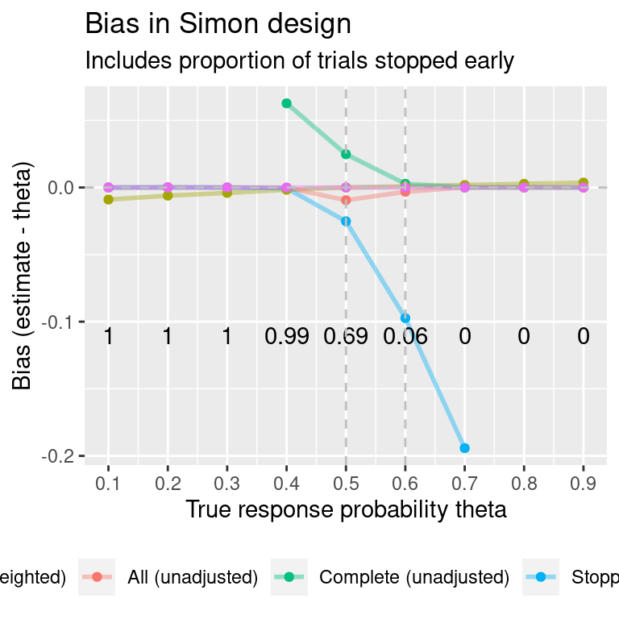
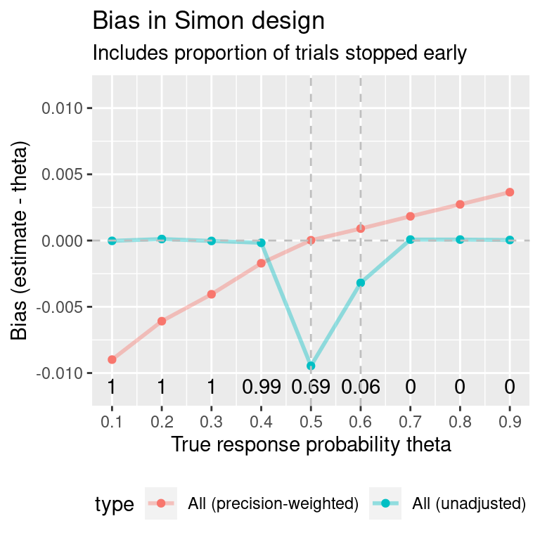
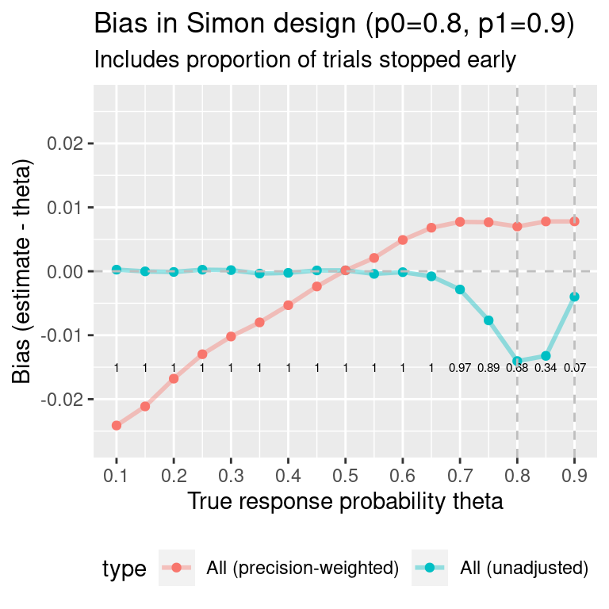

Simon design: simulation study
simon.RmdSimulate Simon design
ADEMP
- Aim: Compare conditional, unconditional, precision-weighted and UMVUE bias in a Simon design
- Data-generating mechanism:
- Binary outcome with a series of response rates (0.1, 0.9, 0.1)
- Type-I error-rate 0.05 when response rate p0=0.5 and power 0.90 when response rate p1=0.6
- Corresponding design: N=233, n1=104. Trial failure if number of responses less than or equal to 54 at interim or less than or equal to 128 at end.
- Estimand: response rate
- Method of analysis: point estimate, SE
- Performance measures: Conditional, unconditional, precision-weighted and UMVUE bias
- Number of simulations: 1e5
Find a Simon design with p0=0.5, p1=0.6, type-I error-rate 0.05, power 0.9:
all.designs <- clinfun::ph2simon(pu=0.5,
pa=0.6,
ep1=0.05,
ep2=0.1,
nmax=500)
# Choose optimal Simon design:
opt.index <- which.min(all.designs$out[, "EN(p0)"])
simon.des <- all.designs$out[opt.index, ]Find bias for a single true response probability theta:
# Find bias for this design, for a single true response probability theta:
nsims <- 1e5
set.seed(16)
single.simon <- pwbSimon(theta=0.5,
des=simon.des,
nsims=nsims)
round(single.simon$ests[, 1:5], 5)
#> nsims bias mean.SE emp.SE theta
#> Stopped early 68566 -0.02523 0.04885 0.03394 0.5
#> Complete 31434 0.02483 0.03267 0.02689 0.5
#> All 100000 -0.00950 0.04376 0.03946 0.5
#> All (precision-weighted) 100000 0.00000 0.04066 NA 0.5
round(single.simon$mc.error, 5)
#> [1] 0.00012 0.00009Find bias for a vector of true response rates:
##### Obtain bias for range of true response probabilities ####
theta.vec <- seq(0.1, 0.9, 0.1) # Vector of true response probabilities
summary.data <- raw.data <- mc.error <- vector("list", length(theta.vec))
stop.early.count <- rep(NA, length(theta.vec))
for(i in 1:length(theta.vec)){
one.run <- pwbSimon(theta=theta.vec[i],
des=simon.des,
nsims=nsims)
raw.data[[i]] <- one.run$results
summary.data[[i]] <- one.run$ests
mc.error[[i]] <- one.run$mc.error
stop.early.count[i] <- one.run$ests["Stopped early", "nsims"]/nsims
}
all.simon <- do.call(rbind, summary.data)We are also interested in the UMVUE, so find this and add to the above results, using the R package singlearm by Michael Grayling:
##### UMVUE for Simon design #####
d2 <- singlearm::des_gs(J=2,
pi0=0.5,
pi1=0.6,
alpha=0.05,
beta=0.1,
Nmin=233,
Nmax=233,
futility=TRUE,
efficacy=FALSE,
optimality="null_ess",
summary=TRUE)
est <- singlearm::est_gs(des=d2, pi=theta.vec, method=c("umvue"))
umvue <- data.frame(matrix(ncol = length(names(all.simon)),
nrow = nrow(est$perf)))
names(umvue) <- names(all.simon)
umvue$theta <- est$perf$pi
umvue$bias <- est$perf$`Bias(hat(pi)|pi)`
umvue$type <- "UMVUE"
all.simon <- rbind(all.simon, umvue)The function showTable will show a table of results for a single theta:
showTable(bias.df=all.simon, theta=0.4)
#> nsims bias mean.SE emp.SE theta
#> Stopped early (unadjusted) 99421 -0.0005 0.0478 0.0470 0.4
#> Complete (unadjusted) 579 0.0627 0.0326 0.0243 0.4
#> All (unadjusted) 100000 -0.0002 0.0477 0.0472 0.4
#> All (precision-weighted) 100000 -0.0017 0.0476 NA 0.4
#> UMVUE NA 0.0000 NA NA 0.4How does bias compare when the true response probability is varied? Find results for a vector of true response probabilities:
#> Warning: Using `size` aesthetic for lines was deprecated in ggplot2 3.4.0.
#> ℹ Please use `linewidth` instead.
#> Warning: Removed 5 rows containing missing values (`geom_line()`).
#> Warning: Removed 5 rows containing missing values (`geom_point()`).
#> theta MC error: bias MC error: SE
#> 1 0.1 0.00009 0.00007
#> 2 0.2 0.00012 0.00009
#> 3 0.3 0.00014 0.00010
#> 4 0.4 0.00015 0.00011
#> 5 0.5 0.00012 0.00009
#> 6 0.6 0.00012 0.00009
#> 7 0.7 0.00009 0.00007
#> 8 0.8 0.00008 0.00006
#> 9 0.9 0.00006 0.00004Plot the same results, but removing the subsets “stopped early” or “stopped at N”:

Simulate trials again, using values of p0 and p1 that are not close to 0.5
ADEMP
- Aim: Compare unconditional and precision-weighted bias in a Simon design (again)
- Data-generating mechanism:
- Binary outcome with a series of response rates (0.5, 0.9, 0.05)
- Type-I error-rate 0.05 when response rate p0=0.8 and power 0.90 when response rate p1=0.9
- Corresponding design: N=127, n1=44. Trial failure if number of responses less than or equal to 36 at interim or less than or equal to 108 at end.
- Estimand: response rate
- Method of analysis: point estimate, SE
- Performance measures: Conditional and precision-weighted bias
- Number of simulations: 1e5
all.designs2 <- clinfun::ph2simon(pu=0.8,
pa=0.9,
ep1=0.05,
ep2=0.1,
nmax=150)
# Choose optimal Simon design:
opt.index <- which.min(all.designs2$out[, "EN(p0)"])
simon.des2 <- all.designs2$out[opt.index, ]Show results for response rates (0.10, 0.90, 0.05):

#> theta MC error: bias MC error: SE
#> 1 0.10 0.00014 0.00010
#> 2 0.15 0.00017 0.00012
#> 3 0.20 0.00019 0.00013
#> 4 0.25 0.00021 0.00015
#> 5 0.30 0.00022 0.00016
#> 6 0.35 0.00023 0.00016
#> 7 0.40 0.00023 0.00017
#> 8 0.45 0.00024 0.00017
#> 9 0.50 0.00024 0.00017
#> 10 0.55 0.00024 0.00017
#> 11 0.60 0.00023 0.00016
#> 12 0.65 0.00022 0.00016
#> 13 0.70 0.00021 0.00015
#> 14 0.75 0.00018 0.00013
#> 15 0.80 0.00015 0.00011
#> 16 0.85 0.00014 0.00010
#> 17 0.90 0.00011 0.00008